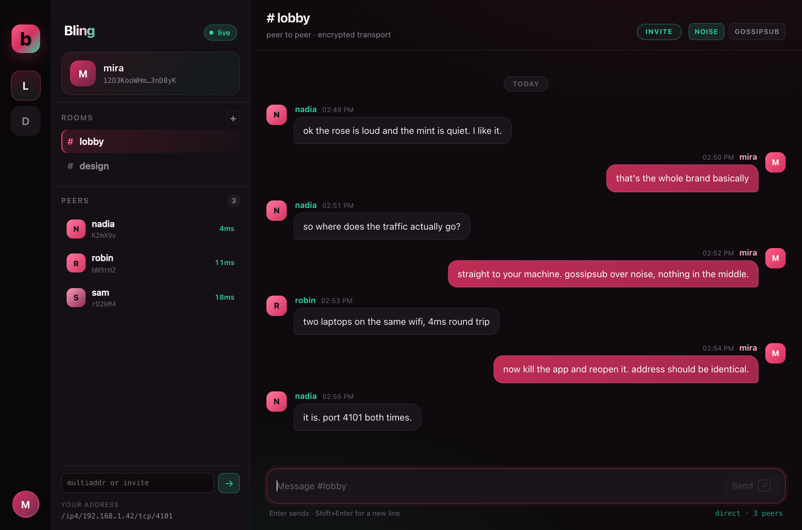

Direct by default
Your messages go machine to machine. Nobody runs a room server that reads the traffic, because there is no room server.
v1.2.0 · free · MIT
Bling is a small desktop messenger that connects two machines directly. No account, no sign-up, no server holding the conversation in the middle.
Android, macOS on Apple silicon and Windows x64.

/ip4/192.168.1.42/tcp/4101/p2p/12D3KooW…
how it works
It starts a libp2p swarm, picks a port, and shows your multiaddr at the bottom of the sidebar. Same port every launch, so the address you shared yesterday still works.
Paste theirs into the dial box, or send an invite link. A Bling invite carries the room and the address together, so one paste connects and joins.
Messages ride a gossipsub topic straight to the other machine. Peers on the same network find each other with mDNS; across networks you point them at each other.
bling://design@/ip4/192.168.1.42/tcp/4101/p2p/12D3KooW…
what you get
Your messages go machine to machine. Nobody runs a room server that reads the traffic, because there is no room server.
Make a room, it becomes a gossipsub topic. Hover it and leave; the subscription goes away. The lobby stays put.
One link carries the room name and the address. Paste it and you are connected and in the room, without a second step.
Presence announces the moment you connect, so you see who is in the room before anyone types. Latency sits next to each name.
Every connection is noise-encrypted and every message is signed and validated before the app shows it. No plaintext on the wire.
Messages live in your own app data, capped at 300 per room. No sync, no backup service, no copy on anyone else's machine.
download
Version 1.2.0. Free, MIT licensed, no account. The builds are ad-hoc signed rather than notarized, so macOS asks you to right-click → Open the first time.
Apple silicon · .dmg
x64 · .exe installer
APK
If any version misbehaves, open an issue.
under the hood
The swarm, the topics, the identity key and the encryption all live in a Rust backend. The webview only draws the window and talks to it over a handful of commands, which is why the UI never makes a network call of its own.
Rust · libp2p · Tauri 2 · WebView · MIT
// one topic per room, validated and signed gossipsub::IdentTopic::new("bling/room/lobby") // your identity, kept across launches identity.key → PeerId → stable address // dialing a friend swarm.dial( DialOpts::peer_id(peer) .addresses(addrs) .build() )